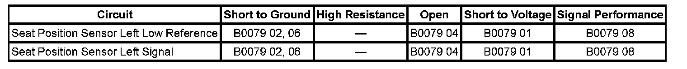

B0079
DTC B0079
DTC DESCRIPTORS
DTC B0079 01
Driver Seat Position Sensor Circuit Short to Battery
DTC B0079 02
Driver Seat Position Sensor Circuit Short to Ground
DTC B0079 04
Driver Seat Position Sensor Circuit Open
DTC B0079 06
Driver Seat Position Sensor Circuit Short to Ground or Open Circuit
DTC B0079 08
Driver Seat Position Sensor Circuit Signal Invalid
DIAGNOSTIC FAULT INFORMATION

Perform the Diagnostic System Check - Vehicle prior to using this diagnostic procedure. Initial Inspection and Diagnostic Overview
CIRCUIT/SYSTEM DESCRIPTION
The inflatable restraint seat position sensor (SPS) is used to determine the proximity of a front driver or passenger seat position with respect to the frontal air bag. The SPS interfaces with the sensing and diagnostic module (SDM). The state of the SPS allows the SDM to disable stage 2 of the frontal air bag for a front seat that is forward of a forward/rearward point in seat track travel. The SPS is a hall effect sensor that is mounted on the outboard seat track of the driver and passenger seats. The seat track includes a metal bracket that shunts the SPS magnetic circuit creating 2 states of seat position. The shunted state represents a rearward seat position. The non-shunted state represents a forward position. The SPS provides 2 current ranges, one range for the shunted state and a second range for a non-shunted state. These 2 states are inputs to the SDM, state 1 (shunted) being the rearward threshold and state 2 (non-shunted) being the forward threshold. When the SDM receives input from a SPS that state 1 threshold is reached (seat is rearward), the SDM will not disable stage 2 deployment, if required by the deployment sensors. When state 2 threshold is reached (seat is forward), the SDM will disable stage 2 deployment on the side the seat is forward. The SDM monitors the SPS circuit and if a fault is detected, the SDM will set codes B0079 and defaults to disabling stage 2 frontal deployment.
CONDITIONS FOR RUNNING THE DTC
Ignition voltage is between 9-16 volts.
CONDITIONS FOR SETTING THE DTC
B0079 01
The SDM detects the SPS circuit is shorted to voltage for 500 milliseconds.
B0079 06
The SDM detects the SPS circuit is shorted to ground or an open occur for 500 milliseconds.
B0079 08
The SDM detects the SPS signal circuit is invalid for 500 milliseconds.
ACTION TAKEN WHEN THE DTC SETS
- The SDM sets a DTC B0079.
- The SDM defaults the SPS to seat rearward threshold.
- The SDM commands ON the AIR BAG warning lamp via serial data communications.
CONDITIONS FOR CLEARING THE DTC
- The condition responsible for setting the DTC no longer exists and the scan tool Clear DTCs function is used.
- A history DTC will clear once 100 malfunction-free ignition cycles have occurred.
CIRCUIT/SYSTEM TESTING
1. IMPORTANT: When removing connectors, inspect for damage or corrosion. Damage or corrosion in the following requires repair or replacement of the affected component/connector:
- The seat position sensor
- The SDM module
- The seat position sensor wiring harness connector
- The SDM wiring harness connector
Ignition OFF, if DTC B0079 is current, disconnect the left SPS connector.
2. Remove the SDM connector.
3. Test the low reference and signal circuits between the SDM and SPS. Verify that a short to voltage, short to ground, or open/low resistance does not exist.
- If any of the above conditions are found, make the appropriate repair.
4. Reconnect all SIR components. Ignition ON, use the scan tool to clear the DTCs then recheck for DTCs. Verify DTC B0079 does not set.
- If DTC B0079 was current, replace the left SPS. After replacement, refer to Repair Verification.
REPAIR INSTRUCTIONS
- Inflatable Restraint Seat Position Sensor Replacement
- Control Module References for SDM replacement, setup, and programming Programming and Relearning
REPAIR VERIFICATION
Ignition ON, use the scan tool to clear the DTCs then recheck for DTCs. Verify no DTCs are set.
- If DTC B0079 was current, replace the SDM.